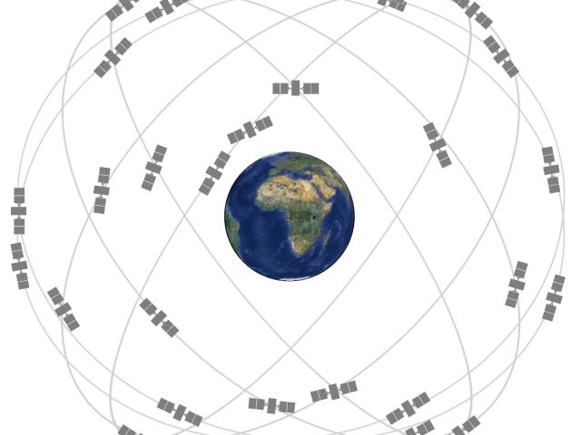

Satellites and Signals

GPS satellites orbit Earth and broadcast signals containing the time the signal was sent and information about the satellite’s position. A receiver uses those signals to estimate how far away the satellites are. Much of this information is taken care of in the space segment.
The Space Segment
The GPS space segment consists of satellites arranged in a constellation transmitting radio signals to users. The US Space force commits to operating at least 24 GPS satellites, with a 95% uptime. The space force has had 31 GPS satellites operating in the last decade, with 24 of them being operational at any given time.
Constellation Arrangement
GPS satellites fly in medium earth orbit at an altitude of about 20,200 kilometers (12,550 miles). The satellites circle the Earth twice each day, and their orbits are arranged so that at least four satellites are visible from virtually any point on the planet. Extra satellites are included in the constellation to improve accuracy and reliability, and to provide redundancy in case of satellite failures. As of June 2011, the Air Force operates in the "Expandable 24" configuration, climbing up to a mostly 27-slot constellation in the modern day.
Current and Future Developments
The US Space Force continues to maintain and upgrade the GPS constellation, with plans to launch new satellites and improve the system's performance. Future developments may include enhanced signal capabilities, increased accuracy, and improved resistance to interference.